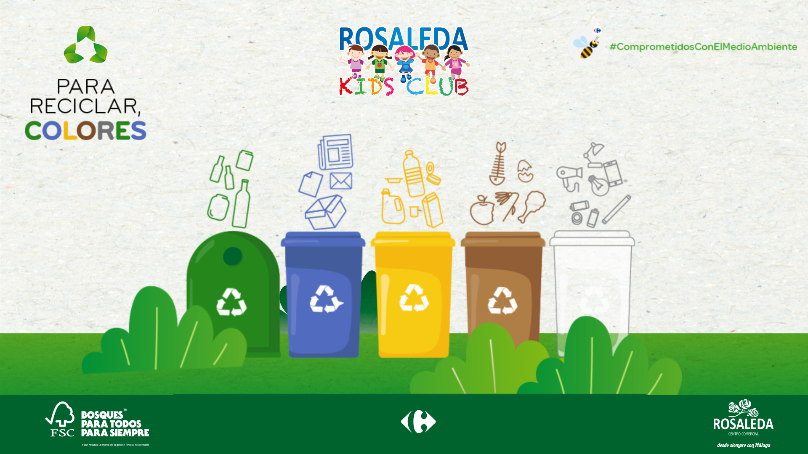

Taller de Reciclaje Creativo

Descripción del Evento
En este taller práctico, aprenderás técnicas creativas para transformar materiales reciclados en objetos útiles y decorativos para tu hogar. Guiados por expertos en diseño sostenible, explorarás diferentes materiales y técnicas para darles una segunda vida.
Lo que aprenderás:
- Técnicas básicas de reciclaje creativo
- Cómo seleccionar y preparar materiales
- Ideas para proyectos prácticos para el hogar
- Consejos para continuar practicando en casa
Materiales incluidos:
Todos los materiales necesarios para el taller están incluidos, pero te animamos a traer algunos de tus propios materiales reciclables para trabajar con ellos (botellas de plástico, cartón, latas, etc.).
Organizado por
EcoIdeas
Asociación dedicada a promover la sostenibilidad a través de la educación y la creatividad.
Contacto: info@ecoideas.org | +34 987 654 321
¿Te interesa participar?
Plazas disponibles: 15/25
Ubicación
Dirección: Av. Santiago Ramón y Cajal, 2, 06001 Badajoz